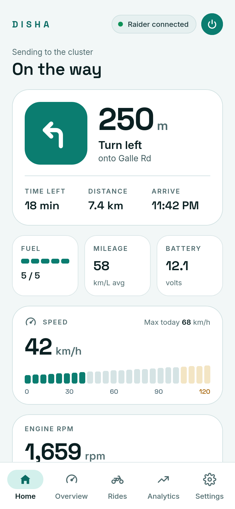
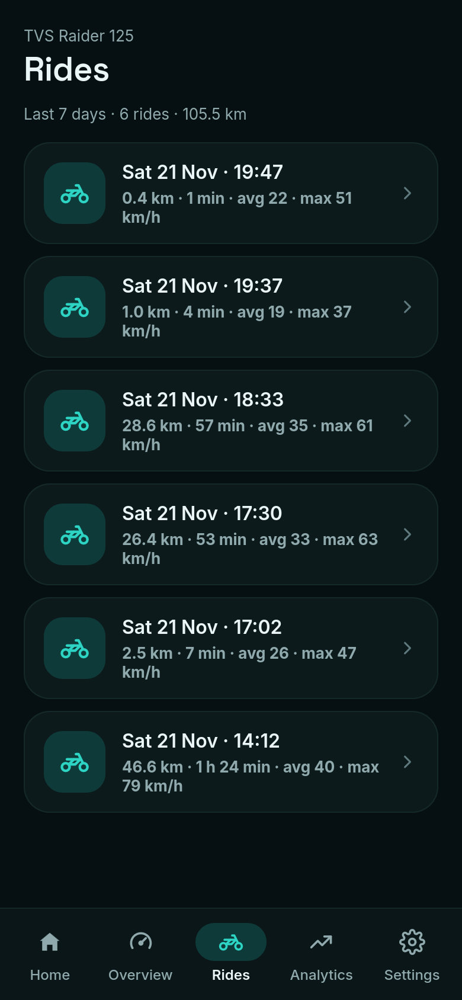
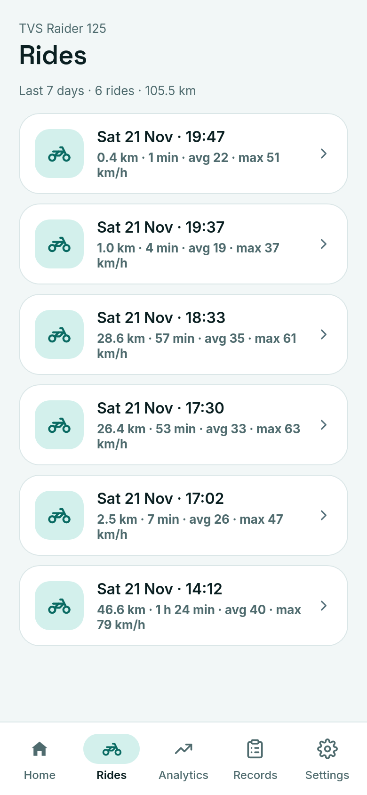
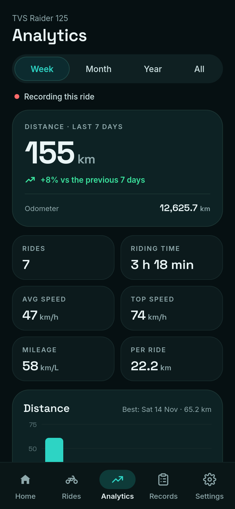
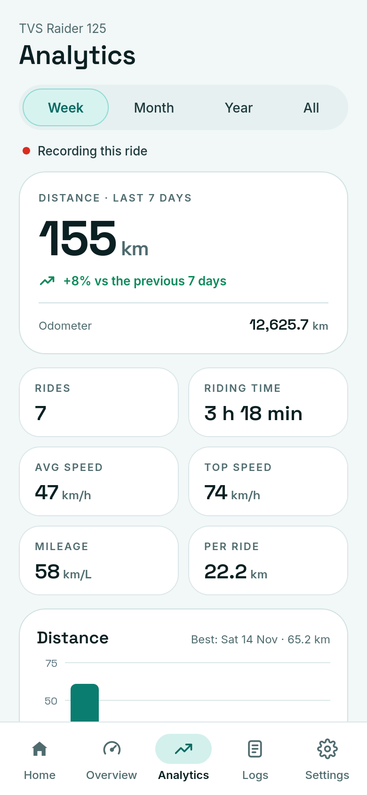
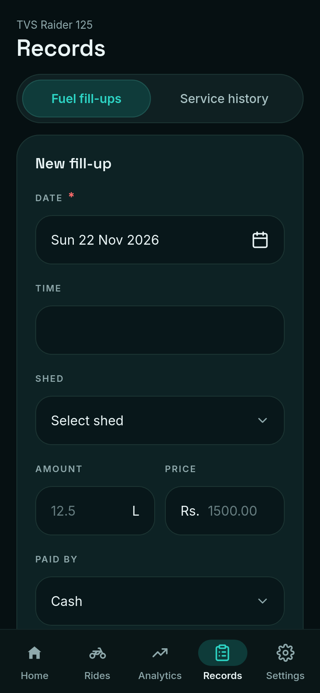
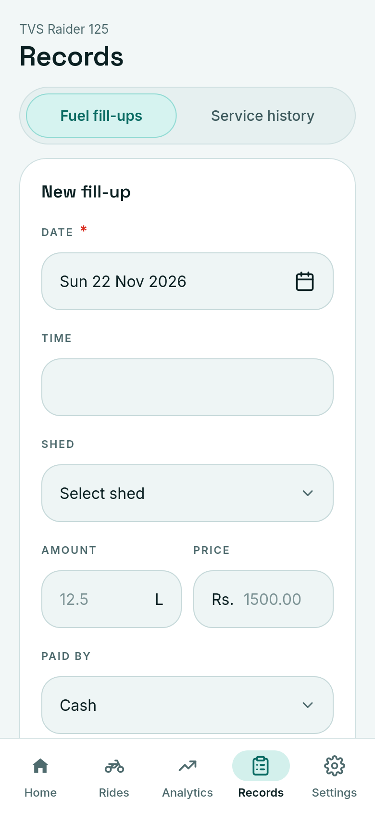
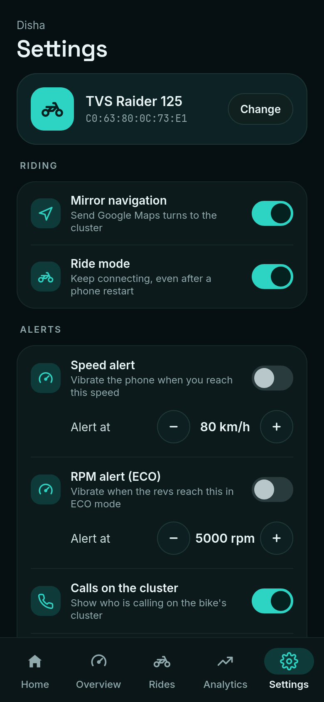
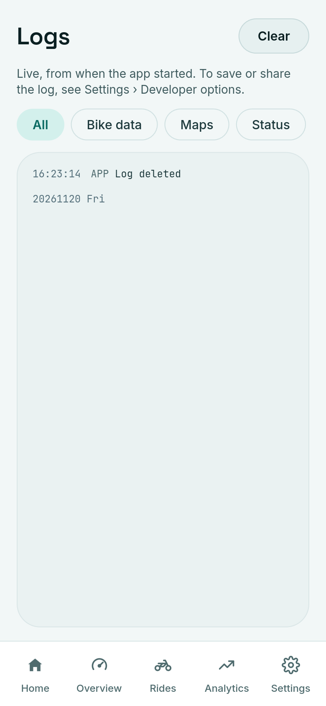

Disha
Google Maps on your
bike's cluster
Disha puts turn-by-turn directions on your TVS Raider's display, so your phone can stay in your pocket.












What it does
No separate maps, no downloads, no account.
Connects to the bike when you start navigating.
RPM, gear, ECO or POWER mode, fuel, odometer, trip B, mileage and battery, read live from the bike, all on Home.
The phone vibrates at the speed you set, or at high revs in ECO mode, even on silent, and warns you when fuel runs low.
Every ride kept, with a date filter and a speed graph. Distance, speed and mileage, plus ECO vs POWER, time in each gear, RPM, idling and throttle, for each ride or by week, month, year or all time. Tap a bar to see its value.
Log every fill-up and service, edit them any time, get a reminder the day before your next service, and see what each km costs.
Back up to a file you choose, daily or when you tap, and restore it any time. Export rides, fill-ups and services as CSV.
See who is calling on the bike's screen while the phone rings, from the phone app, WhatsApp and other calling apps.
Dark, light, follow your phone, or let it go dark by itself from 6 PM to 6 AM.
No internet permission. Nothing leaves your phone unless you export it.